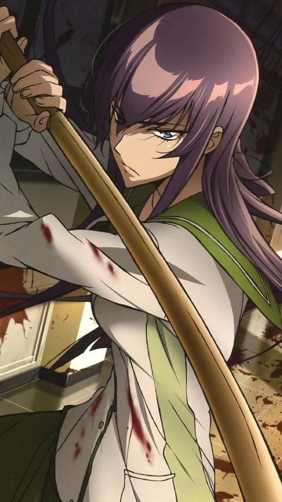

Copyright; This work of art is attributed to the
Attribution 2.0 Generic (CC BY 2.0) copyright protection, and can be found
Here at Flickr © , with aditional copyrights reserved for
Tatiana T © , Highschool Of The Dead © , Fujimi Shobo © , Yen Press © and Madhouse © .
Copyright; High School DxD Hero © OP: SWITCH © , High School DxD © , Etsuko Yakushimaru © , Toei Animation © and Viz Media © .This work of art is attributed to theAttribution 2.0 Generic (CC BY 2.0) copyright protection, and can be found Here at Flickr © , with aditional copyrights reserved for Bago Games © , AT-X © ,
Fujimishobo © , Genco © , Yen Press © and Ichiei Ishibumi © .
"Dubbed" anime is anime that are re-recorded by new VAs (Voice Actors) for releases in other countries in the voices of said contries native language. The 1st ever anime dubbed for American audiences was called Tetsujin 28-gō (which translates to "Iron Man No.28" in English) in which it needed a name change to "Giantor" due to copyright reasons. Tetsujin 28-gō aired from the 20th of October in 1963 up until the 25th of May in 1966 with a total of 93 episodes in Japan, but only 52 of them were dubbed for English viewers.